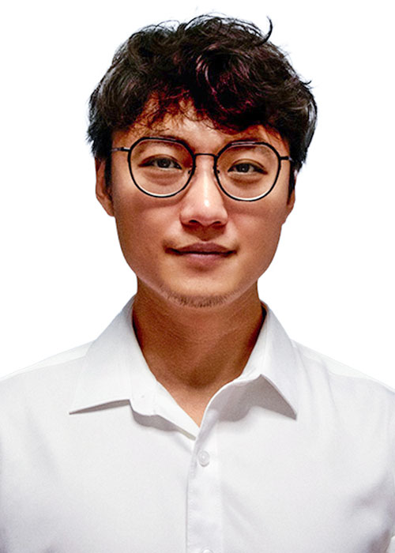
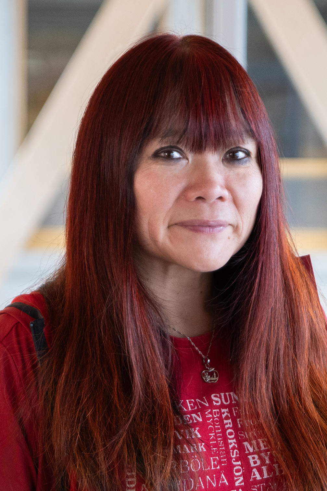
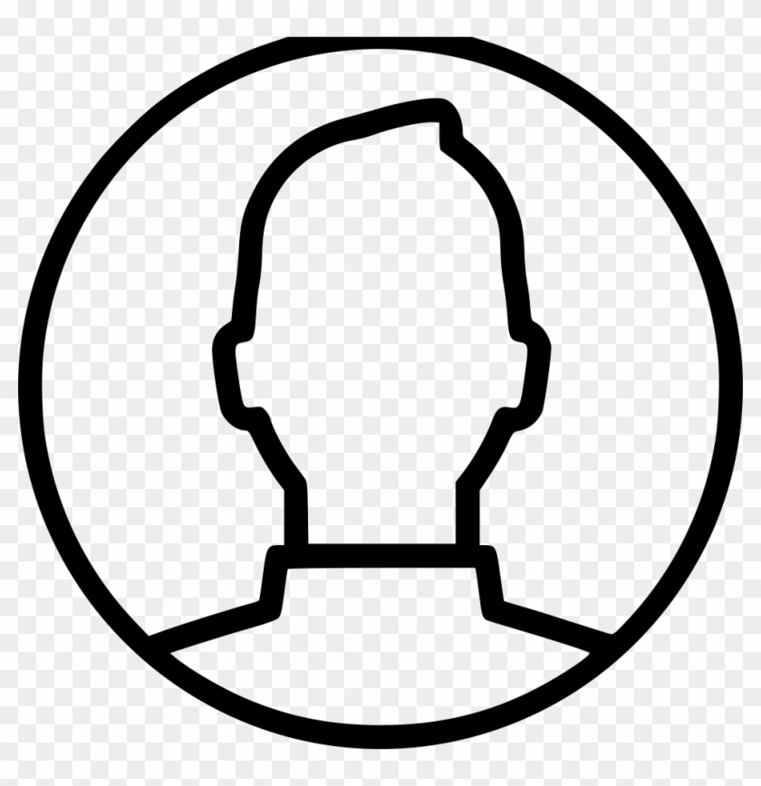
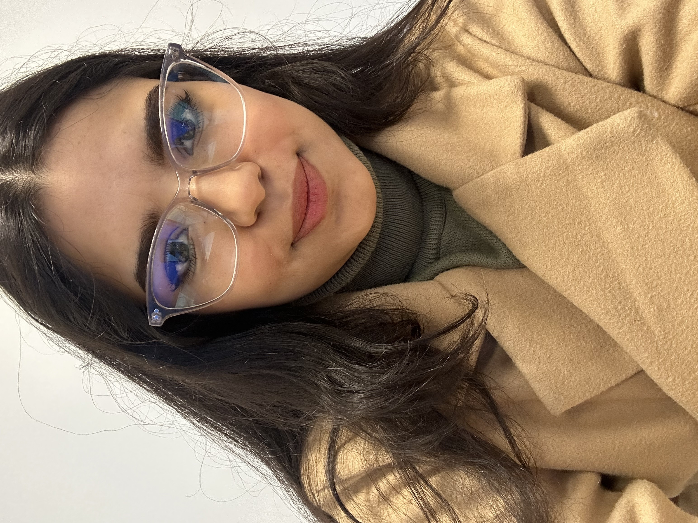
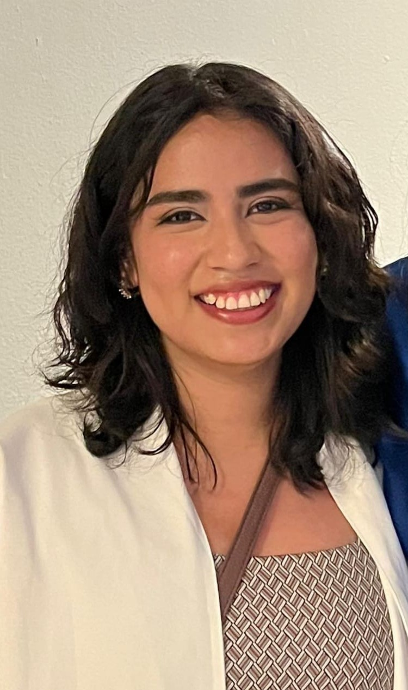
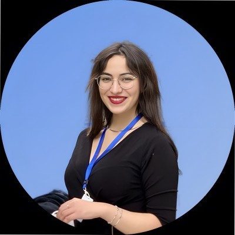

Professeur agrégé
Département de mathématiques, informatique et génie
Université du Québec à Rimouski
Domaines de recherche
Béton haute performance (BHP) & BFUP
Durabilité des matériaux de construction
Transport multiphysique en milieux poreux
Méthodes numériques (FEM, FVM, Lattice)
Analyse dynamique des structures
Contact
📧 xuande_chen@uqar.ca
☎️ (418) 723‑1986 poste 5417
À propos
Notre groupe de recherche se consacre à l'approfondissement de la compréhension, de la simulation et de la prédiction des défis liés à la durabilité des matériaux, structures et réseaux d'infrastructures en génie civil. Nous visons à développer des stratégies innovantes pour l'atténuation des risques et la gestion durable à long terme, afin de soutenir des pratiques d'ingénierie résilientes et durables.
Nos activités de recherche actuelles se concentrent sur les domaines clés suivants :
• Évaluation de la durabilité et réhabilitation des matériaux et structures de génie civil
• Surveillance et modélisation des infrastructures soumises à des conditions climatiques extrêmes et à des actions d'origine humaine
• Intégration de l'intelligence artificielle guidée par la physique dans les simulations multiphysiques du béton
• Évaluation et gestion durable des réseaux d'infrastructures urbaines et côtières
Projets de recherche en vedette
Découvrez nos travaux innovants dans la durabilité des infrastructures en béton.
Modélisation du transport de chlorures
Simulation numérique pour prédire la pénétration des ions chlorures dans les structures de béton exposées aux environnements agressifs.
Modélisation numérique des échanges d’ions et de la corrosion dans les infrastructures marines
Développement d’un modèle numérique multi-ionique couplé à l’équilibre chimique pour simuler les phénomènes de corrosion dans les infrastructures marines.
Ce projet vise à simuler la pénétration des ions chlorures dans le béton à l’aide de modèles numériques en 1D et 2D. Il repose sur des équations de diffusion couplées à l'humidité et intègre les effets de la capillarité.
Approche scientifique
La modélisation repose sur des méthodes numériques (FEM/FDM) et s’appuie sur des données expérimentales pour la calibration. Une extension vers un cas réel (pont à Rimouski) est prévue.
L’objectif principal est de développer un outil de simulation fiable permettant de prédire la pénétration des chlorures dans des structures en béton exposées à des environnements agressifs, tels que les milieux marins ou les zones soumises aux sels de déglaçage.
Septembre 2024 : Début du projet et état de l’art
Octobre 2024 : Modélisation 1D et validation
Décembre 2024 : Extension vers un modèle 2D
Janvier 2025 : Intégration de données expérimentales
Avril 2025 : Application au cas du pont de Rimouski
Les résultats attendus incluent des profils de concentration en chlorures simulés, la validation par des mesures expérimentales, et des visualisations en 2D de la progression de la contamination. Un prototype d’interface utilisateur pour les ingénieurs est également envisagé.
×
Mesuring of chloride content in concrete structures
Mai 2025 - Août 2025
Nohema Lopez Duran, supervision UQAR
Ce projet vise à modéliser le contenu en chlorures des structures en béton à l’aide de mesures avancées et d’un suivi sur le terrain.
Comprendre l’impact du microclimat marin sur les structures en béton.
Quantifier les impacts avec des techniques de surveillance de la santé structurelle.
Semaine 1 : Intégration dans le groupe de recherche
Semaines 2-3 : Revue de la littérature
Semaines 4-10 : Conception expérimentale et essais avec l’instrument
Semaines 11-12 : Rédaction du rapport de synthèse
Rapport complet sur les méthodes d’essai.
Rapport technique de l’instrument.
Rapport de synthèse sur le stage.
×
Modélisation numérique des échanges d’ions et de la corrosion dans les infrastructures marines
2025
Arij Ben Youssef, supervision UQAR
Ce projet vise à développer un modèle numérique multi-ionique couplé à l’équilibre chimique pour simuler les phénomènes de corrosion dans les infrastructures marines.
Développer un modèle multi-ionique couplé à l’équilibre chimique.
Simuler la pénétration des ions (Cl⁻, Na⁺, Ca²⁺, etc.) dans le béton.
Valider le modèle avec des données expérimentales.
2024-2025 : Revue de la littérature, développement des équations, implémentation du code.
2025-2026 : Simulation de cas concrets, calibration du modèle.
2026-2027 : Validation expérimentale, rédaction de publications.
2028 : Finalisation de la thèse et soutenance.
Modèle multi-ionique précis du transport dans le béton.
Compréhension des mécanismes de dégradation par ions chlorure.
Outils numériques pour l’évaluation de la durabilité.
Recommandations pour la conception des ouvrages.
×
Modélisation multi-ionique du transport des ions chlorure dans le béton
Ce projet vise à modéliser le transport multi-ionique, notamment des ions chlorure, dans le béton armé exposé aux environnements maritimes.
Développer un modèle multi-ionique précis du transport ionique.
Évaluer la durabilité des infrastructures marines.
Améliorer la conception et l’entretien des ouvrages.
2024-2025 : Revue de la littérature, développement du modèle.
2025-2026 : Simulation et calibration du modèle.
2026-2027 : Validation expérimentale et publications.
2028 : Soutenance de thèse.
Modèle multi-ionique du transport dans le béton.
Meilleure compréhension des mécanismes de dégradation.
Outils numériques pour l’évaluation de la durabilité.
Recommandations pour les ouvrages maritimes.
Notre Équipe
Chercheur Principal

Dr. Xuande Chen
Professeur adjoint, Directeur scientifique
Expert en durabilité des matériaux, monitoring d'infrastructures, modélisation multiphysique et gestion durable des réseaux côtiers.
Collaborateurs

Dr. Xiaodong Wang
Professeur, Université du Québec à Rimouski
Spécialiste en génie civil appliqué aux structures intelligentes et durables, modélisation avancée et dynamique des matériaux.

Guillaume Savard
Agent de recherche et coordonateur du CRIB, UQAR
Spécialiste en ingénierie et innovation pour les infrastructures en béton et la coordination de projets de recherche.
Étudiants

Fatima Ezzahrae Hafidi
Doctorante à l'UQAR
Travaille sur la modélisation multi-physique du transport ionique dans le béton en milieu maritime.
Abderrahmane Sghuri
Étudiant (Maîtrise en ingénierie)
Travaille sur la modélisation numérique du transport de chlorures dans le béton pour améliorer la durabilité des infrastructures.

Nohema Lopez Duran
Étudiante en stage Mitacs
Participe au projet de mesure de la teneur en chlorures dans les structures en béton, au sein de l'UQAR.

Arij Ben Youssef
Stagiaire, Étudiante en génie civil (ENIT)
Travaille sur la modélisation numérique de la corrosion et des échanges ioniques dans les infrastructures marines.
×
Prof. Xuande Chen
Professeur adjoint - UQAR
Génie civil | Durabilité des infrastructures | Modélisation multiphysique
Biographie
Spécialiste en durabilité des infrastructures côtières, le Pr. Chen développe des approches innovantes combinant monitoring expérimental et modélisation numérique pour prédire la dégradation des structures en béton exposées aux environnements marins extrêmes. Titulaire d'un doctorat de l'Université Laval et ancien chercheur à Northwestern University
Domaines d'expertise
Durabilité du bétonModélisation multiphysiqueÉléments finis
Publications récentes
[J.3] Chen X. et al. (2023). "Modélisation numérique du transport multi-ionique dans le béton". Archives of Civil Engineering 23(232).
[C.1] Chen X. et al. (2024). "Mesure de la corrosion en milieu marin par capteurs fluorescents". ACEER 2024, Beijing.
×
Prof. Xiaodong Wang
Professeur
Université du Québec à Rimouski
Biographie
Le Pr. Wang est reconnu pour ses travaux sur les structures intelligentes, les matériaux durables et les systèmes dynamiques avancés en génie civil.
Domaine de recherche
Structures intelligentesDynamique des structuresDurabilitéModélisation avancée
Publications
Wang X. (2023). "Smart Monitoring Systems for Infrastructure". Canadian Journal of Civil Engineering
Wang X. (2022). "Advanced Modeling Techniques in Structural Engineering". Int. Conf. on Smart Structures
×
Guillaume Savard
Agent de recherche et coordonateur du CRIB
Université du Québec à Rimouski
Biographie
Guillaume Savard a travaillé comme consultant en structure de bâtiment de 2018 à 2023, concevant des structures pour des projets variés en collaboration avec les secteurs privé et public.
Il contribue aujourd’hui à des projets d’innovation en ingénierie à titre d'agent de recherche au sein de la Plate-forme d’appui régional à l’innovation en génie (PARI-G) à l'UQAR.
Il est également coordonateur du Centre de recherche sur les infrastructures en béton (CRIB), où il assure la communication entre les participants, la mobilisation des partenaires et le transfert des connaissances.
Domaine de recherche
Général
×
Abderrahmane Sghuri
Étudiant (Maîtrise en ingénierie)
Université du Québec à Rimouski — Infrastructure Durable UQAR
Biographie
Étudiant en double diplôme en génie civil, actuellement en maîtrise en ingénierie à l’UQAR. Il travaille sur la modélisation numérique du transport de chlorures dans le béton, avec pour objectif d’améliorer la durabilité des infrastructures exposées aux environnements agressifs.
Domaine de recherche
Modélisation numériqueTransport de chloruresDurabilité du bétonGénie civil
×
Nohema Lopez Duran
Étudiante en stage Mitacs
Universidad de Guadalajara - UQAR
Biographie
Actuellement en dernière année en génie civil à l'Université de Guadalajara. Elle participe au stage Mitacs à l'UQAR sur la pénétration des ions chlorures et la surveillance environnementale.
En dernière année d'études en génie civil à l'ENIT, spécialisée en structures durables. Elle effectue son stage Mitacs à l'UQAR sur la modélisation numérique de la corrosion dans les infrastructures marines.
Ingénieure d’État en génie mécanique, actuellement doctorante en génie civil à l’UQAR. Ses recherches portent sur la modélisation multi-physique du transport ionique dans le béton maritime.
Domaine de recherche
Modélisation numériqueGénie civilDurabilité des matériaux
Publications
Articles dans des revues scientifiques
Bridge Service Life and Impact of Maintenance Events on the Structural State Index
Bah A.S., Chen X., et al.
Case Studies in Civil Engineering, Vol. 22, 2025
Contribuez à la recherche sur la durabilité des infrastructures en béton et les modèles numériques.
Stage en Modélisation du Transport d’Humidité
Recherche Appliquée
📍 Rimouski, Canada
🕒 Durée : 4 à 6 mois
Travail sur la simulation numérique de l'humidité dans le béton à l’aide de méthodes par éléments finis.
Maîtrise en ingénierie (Durabilité des Infrastructures Côtières)
Génie Civil – UQAR
📍 Québec, Canada
🕒 Début : Printemps / Été 2026
Recherches avancées en durabilité du béton, suivi intelligent, modélisation multiphysique, réhabilitation des infrastructures portuaires.
Doctorat en Génie Civil (Structures Côtières Durables)
Structures & Matériaux
📍 Université du Québec à Rimouski
🕒 Début : Printemps / Été 2026
Projets de recherche sur la durabilité des structures côtières, modélisation multiphysique, IA pour l’analyse des matériaux.
×
Stage en Modélisation du Transport d’Humidité
Recherche Appliquée - Rimouski
Description du stage
Travail sur la simulation numérique de l'humidité dans le béton, méthodes éléments finis, étude expérimentale et modélisation couplée.
Exigences
Étudiant en génie civil, matériaux ou discipline connexe
Compétences en modélisation numérique
Connaissances en humidité / durabilité des matériaux cimentaires
Programmation : Python, MATLAB ou équivalent
Comment postuler
Envoyer un courriel à Dr. Chen : xuande_chen@uqar.ca avec CV + lettre de motivation.
×
Maîtrise en ingénierie - Durabilité des Infrastructures Côtières
Génie Civil – UQAR
Description du projet
Le groupe de recherche du Dr. Chen recherche un étudiant en maîtrise pour contribuer à des recherches de pointe sur la durabilité des infrastructures côtières.
Suivi intelligent et analyse de l’exposition climatique des ponts et chaussées
Technologies IA basées sur la physique pour la modélisation des matériaux béton
Réhabilitation et évaluation de la fiabilité des structures portuaires
Exigences
BSc ou diplôme en génie civil, structures, matériaux ou domaine connexe
Bonnes compétences en modélisation, mécanique, mathématiques
Programmation : MATLAB, Python, C++
Anglais et/ou français écrit et oral
Ce que nous offrons
Bourse : 18 000 $/an pendant 3 ans
Exonération des frais de scolarité internationaux (sous conditions GPA)
Possibilités d’assistanat
Conférences et financement complémentaire
Comment postuler
Envoyer un courriel à Dr. Chen : xuande_chen@uqar.ca avec :
Lettre de motivation + objectifs de recherche
CV
Relevés de notes
Test langue (anglais/français) si disponible
×
Doctorat en Génie Civil - Structures Côtières Durables
Structures & Matériaux – UQAR
Description du projet
Le groupe de recherche du Dr. Xuande Chen recrute un doctorant pour mener des recherches de pointe en durabilité des infrastructures côtières.
Surveillance intelligente et analyse du microclimat
IA basée sur la physique pour la modélisation des matériaux
Réhabilitation des structures côtières avec matériaux composites
Simulation multi-échelles et multi-physique de la dégradation des structures
Exigences
Master en génie civil, structures, matériaux ou domaine connexe
Compétences solides en mathématiques, mécanique, modélisation
Programmation : MATLAB, Python, C++
Langue : anglais et/ou français
Atouts
Maitrise de logiciels FEM (Abaqus, Comsol)
Compétence en CFD (OpenFoam)
Connaissance des réactions électrochimiques et de la mécanique des milieux poreux
Ce que nous offrons
Bourse : 21 000 $/an pendant 3 ans
Exonération des frais de scolarité internationaux
Possibilités d’assistanat
Financement pour conférences nationales/internationales
Comment postuler
Envoyer un courriel à Dr. Chen : xuande_chen@uqar.ca avec :
Lettre de motivation + objectifs de recherche
CV
Relevés de notes
Test langue (anglais/français)
Autres documents (optionnels)
Contactez Notre Équipe de Recherche
Vous souhaitez collaborer, poser une question ou rejoindre notre équipe ? Nous serons ravis d’échanger avec vous.
Informations de Contact
Email : chen.xuande@uqar.ca
Téléphone : +1 (418) XXX-XXXX
Adresse : UQAR - Département de Mathématiques, Informatique et Génie 300 Allée des Ursulines, Rimouski, QC G5L 3A1
Heures d'ouverture : Lundi à Vendredi, 9h00 - 17h00
 Partenariats internationaux
Partenariats internationaux